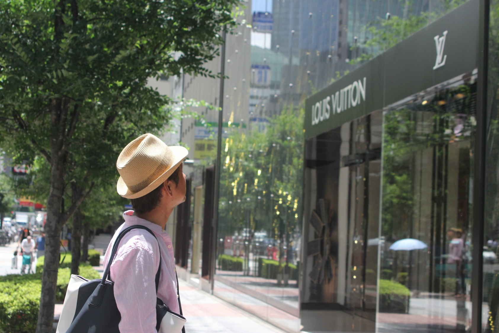

| BUYMA超入門: 女性のためのお金の稼ぎ方 | |
| 高橋雅 | |
| (2018) | |
もしあなたは明日仕事を失ってしまったらどうするでしょうか？
もしあなたが結婚をし旦那さんが仕事ができないという状況になったらどうするでしょうか？
私は今年２０１８年の２月頃に突然会社をクビになりました。
とても急な出来事だったので今でも昨日のようにはっきりと覚えています。
休み明けに出勤すると私のデスクにＰＣがありません。
咄嗟にこの日がついに来たかと悟りました。
私は２０歳の時に地元横須賀市を飛び出して東京に行きました。
何のあてもなく・・・。
そんな私の目に飛び込んできたのは、寮完備、光熱費無料、食事、タバコ、ジュース付きで
１７５０００円の給料がもらえる仕事の募集でした。
とても魅力的でした。
そうです。パチンコ業界の募集でした。
丁度リニューアルオープンの募集があったので迷わず応募して即日勤務です。
初めてパチンコ店に務めて１ヵ月ほど経過した頃には私が一番の古株になっていました。
毎日のように勤務していたスタッフは辞めていきました。
給料が安いと。
１７５０００円が安い？！
家賃、光熱費も食費もかかりません。
タバコもジュースも支給されお菓子も食べ放題の日々です。
私からしたらとてもじゃないですが、安いとは思えませんでした。
だって丸々使える１７５０００円ですから。
結果、１ヵ月後には班長という役職に抜擢され、半年後には主任、
そして一年半後にはマネージャーとジャンジャン出世していったのです。
それは２０代前半の私にとっては十分すぎる待遇でした。
会社に行く毎日が楽しくて休みの日でも閉店後には店に出勤してました。
当時のパチンコ店は業績も良く、給料もジャンジャンバリバリ上がっていきました。
今では考えられないような金額を貰ってました。
今思えば、それが私にとってはマイナスだったのかもしれません。
調子に乗って、その会社を辞めた私は関西に行くことにしました。
理由はよくわかりませんが関西に強い憧れがあった私に奈良のお店のグランドオープンをやってみないかという話がきたのです。
当時は完全に調子に乗っている若造です。
私に任せればどんな不採算店でも復活すると思い込んでいました。
結果、奈良のお店もそうなりました。
関西のお店は営業力がありましたが、サービス面は酷いものでした。
ホールの片隅でタバコを吸うパンチパーマの従業員たち・・・。
話を持っている訳でもなく、本当にそんな状況だったんです（笑）
私は従業員をクルーと呼び意識改革を徹底させました。
時間はかかりましたが当時の奈良県では伝説となるような繁盛店になりました。
給料は大分下がりましたが役職は店長よりも上になり３０代になった私も
調子に乗ったまま終わります。
大きく変わったことと言えば関西に出てきて賄いが無くなり外食が増えたこと...。
今思えばこれが私の人生を大きく変えるキッカケだったのかもしれません。
外食となると当然好きな物しか食べません。
しかも給料は大分下がっているのでファストフードの毎日です。
牛丼⇒
ハンバーガー⇒
ファミレス⇒
ラーメン⇒
牛丼・・・。
こんな毎日を数年続けたある日、腕が痒くなってきたんです。
２０代の時は６５キロだった体重は７５キロぐらいになってました。
そして痒い部分はどんどん広がって体中が蕁麻疹だらけとなりました。
色々な病院をたらい回しにされました。
何か薬にあたっただの、毛虫に刺されただの...（笑）
結果、栄養が極端に偏ったのではないかと、医者でなく店のスタッフに言われ、
それがどの医者の見解よりも私は納得がいきました。
そして今の嫁との出会い...
その当時に付き合い始めた店の珈琲ワゴン販売の子と私は２度目の結婚をしました。
奈良のお店の経営陣には店の子には絶対に手を出してはいかんと言われておりましたので、
珈琲販売の子ならギリギリセーフかなと・・・。
ギリギリセーフでした（笑）
会社にも正式に認められ直ぐに同棲することになりました。
それからは外食することも少なくなり身体中にあった蕁麻疹は嘘のように
消えてしまったのです。
その後、奈良のお店の大成功を見てくれた大阪の経営者からヘッドハンティングを
受けるようになります。
調子に乗っていた私は○○万円出せば行くとか、役職は店長以上とか条件を言いました。
で、大阪のある弱小企業に勤めることになるのです。
私の考え方としては弱小企業の方が仕事における行動範囲が広くとれる！
事実そうでした。
ある程度のチェーン店になると制約があり過ぎて窮屈です。
実際この店でも大きな成果をあげました。
完全に自分の実力だと勘違いするには十分な結果でした。
その頃の栄光にすがり、この歳までずるずると何もせずにきてしまいました。
パチンコ店の事務所で踏ん反り返るだけの仕事を何年したんでしょうか？
そんな私にバチが当たるかのように状況は悪化していきます。
店の業績も私の給料もどんどん下がりました。
ジャンジャンバリバリ上がっていったのは体重と血圧だけ（笑）
ＭＡＸ９５キロにまで体重が上がり、また蕁麻疹も出来始めました。
しょっちゅう頭が痛くなり薬ばかり飲んでいました。
痩せなきゃ・・・
元々、理屈っぽい私は色々と調べ始めます。
結果、食べ物や飲み物を変えようという超！健康志向にいきあたります（笑）
嫁も協力してくれました。
まずは調味料から全て無添加のものに変えました。
水は観音温泉のものしか飲みません（笑）
皆さんの家では塩はいくらの物を買っていますか？
我が家で買う塩は１キロ３０００円もするんです。
まだ小さい息子のおやつもお菓子なんてあげません。
おやつがお菓子なら１日数百円で済みますが、我が家では国産の果物しか
与えませんので１０００円以上かかります。
当然、私の安月給では追いつきません。
何か始めなきゃ・・・。
この判断がまず大失敗になりました。
あるフランチャイズの移動販売を嫁にさせて数百万円の借金を抱えてしまいます。
さあ、大変です（笑）
ようやく目が覚めたのか？
私もとにかくネットで副業的な記事を読み漁ります。
来る日も来る日も・・・
まずはアマゾンせどりに目を付けました。
簡単そう♪
確かに直ぐに２０万円ぐらいは稼げるようになりましたが、これまた来る日も来る日も
仕入れ、リサーチ、膨大な納品作業・・・
こんな生活続けられるわけがない
無理だ
そんな私は今どうしているか。
ご存知の通り今私はバイマを使ってお金を稼いでるわけなんです。
確かに、アマゾンせどりとなんら変わらないかもしれない。
でも、バイマとアマゾンでは全く違う点を発見したのです。
それをこれからみなさんに知っていただきたいと思います。
・ＢＵＹＭＡ（バイマ）との出会い
ごくごく単純に輸入って聞くとなんとなく面白そう。
ただそれだけでした。
当時の私にとってアマゾンで行なっていたせどりは苦痛そのものでした。
なぜなら楽しくないから。
これに尽きます。
よく成功している人たちは自分のやりたいことをやっていたらお金が自然に尽ついてきた。そういうのを耳にします。
要は、これってどうなっているか？これってこうできたらいいのにな
なんて自ら考えて色々と試すからだと思うのです。
ＢＵＹＭＡについて知ってからは、ネットや雑誌などしらみつぶしに情報を漁りました。
そんなことをしていたら、とあるブログにたどり着いたのです。
輸入ブログランキングを見ているとあるフレーズが私の心に突き刺さりました。
貴方は３ヵ月後に辞表を出す！！！
↑この言葉に一目惚れした私は直ぐにそのブログのお問い合わせフォームに
私も辞表を出すと言って連絡したのを今でも覚えています。
ＢＵＹＭＡ（バイマ）ってどうすれば稼げるの！？
それが私のスタートラインでした（笑）
アマゾン、メルカリじゃないのはなぜ？
でも扱うのはブランド物っていうし、なんか面白そう♪
しかしこれまでパソコンでの作業やデスクワークを経験したことがなかった私にとって
インターネットの世界でお金を稼ぐのは当時の私にとってすごくハードルが高く感じていました。
それでもこれをやるしかないという強い決意だけでがむしゃらになって頑張ったのを覚えています。
ＢＵＹＭＡ（バイマ）のコンサルをお願いするのと同時に、パソコンの家庭教師を雇うことに・・・
一体いくら使ったのだろう？
でも迷いは一切ありませんでした。
私も当時は３ヵ月後に辞表を出す。と決心していました。
いざ蓋を開けてみたら、３ヶ月では辞表を出せず、それからさらに３ヶ月後にクビを切られるわけですが・・・
クビになるまでの半年間何をしていたのか？
ＢＵＹＭＡも結局稼げなかったんじゃないか？
そう思われるかもしれませんが、ＢＵＹＭＡ（バイマ）に出会い人生が変わりました。
始めて数ヵ月間は、お問い合わせのお客様対応だけでした。
初めて受注を頂いたのは馬の帽子でした。
馬にかぶせる帽子です。
売れた時は、喜びよりも疑問の方が大きかったです。
よりにもよってなぜ馬の帽子なの？？
購入者に聞く訳にはいきませんでしたが、これだけは分かりました。
ＢＵＹＭＡというプラットフォームでは、いわゆる有名なブランドものも確かに売れるが、一見売れなさそうなものが売れるということです。
つまり、まだまだ参入の余地があるということでした。
アマゾンやメルカリは飽和しているとよく言われています。
ユーザーの収入で例えるならば、アマゾンやメルカリではあまり高い商品は売れません。
数千円〜どんなに高くても数万円のものが売れやすいため、どうしても薄利多売になってしまうのです。
ここであなたに質問したいのですが、もしも今からチョコレートを売って１万円稼いでください。と言われ、２つの選択肢が与えられたらどちらを選ぶでしょうか？
Ａ：１粒１０円のチョコを１０００個売る
Ｂ：１粒１０００円のチョコを１０個に売る
ほとんどの方がＢを選ぶと思うのですが、つまりそういうことなのです。
高く売れるものを売った方がはるかに簡単にお金を稼ぐことができるのです。
こう書くとぼったくっているだけなのではと思われてしまうかもしれませんが、そういう訳ではありません。
ぼったくり価格では他者に負けてしまうのでそもそも成り立ちません。
そこでキモになってくるのが。。。
と勢いで話しそうになってしまいましたが、それはまた後ほどお話ししましょう。
話を元に戻すと、アマゾンやメルカリでは単価が安いものを売る。
ではＢＵＹＡＭＡはどうなのか。
少なくともブランド品を探している人がお客様なので、お金には多少なりとも余裕があります。
つまり高い商品でも売れてしまうという訳です。
それだけではありません。
まだまだＢＵＹＭＡにしかない稼げる理由というのがたくさんあるのです。
無在庫販売が堂々と出来る
私が知る限り無在庫販売が公式に許されている販路はＢＵＹＭＡ（バイマ）だけです。
物販は基本的には無在庫と呼ばれる売り方は規制されています。
運営に見つかってしまったらアカウント凍結なんてよくある話です。
ちなみにビジネスにおいて在庫はできるだけなくす。というのが鉄則です。
飲食なんかでバイトや仕事をしていた人は店長が在庫には厳しかったななんて感じる場面を見たことがある人もいるかもしれませんね。
幸いにもＢＵＹＭＡで売るものに賞味期限やそれを維持するために冷蔵庫が必要。あるいは部屋の温度を一定に保つという必要がないため管理する費用、最初に仕入れなければいけないということがないため、リスクがほとんどありません。
価格交渉が可能
言い換えるのであれば、値上げ交渉がＢＵＹＭＡ（バイマ）ではできちゃうんです。
どういうことか疑問に思う方もいるでしょう。
ＢＵＹＭＡでは出品者に質問でこのブランドのバックのＳサイズを探してるんですがありませんか？とか、この商品のこの色のものを探してるんですがありませんか？という質問がきます。もし自分の商品リストにあればありますよ。で済むんですが、ない場合こちらで探してあげて買ってもらうなんてこともします。
ネットの時代になった今あらゆるネットショップが乱立しユーザーは自分の欲しい商品にたどり着けないということが多いのです。大衆化と言われていた昔に比べると今は個性が強く商品１つとってもこだわりが強く、これが買えるなら少し高くても買う。そう思っている人は実は多いのではないでしょうか？
つまりＢＵＹＭＡでビジネス＝リサーチをユーザーに変わってしてあげるというサービスに近いのかもしれませんね。
もちろん、そこには新たに時間がかかります。その時間分のお金や仕入れることはできたけど少し高く着いてしまった。なんて時に値上げ交渉をします。
面倒なリサーチなんかしなくても十分に収益が上がる
リサーチをしなくても収益があがるんなんて何を言っているのかと思われるかもしれませんね。確かに、リサーチが大切なことは理解しているんです・・・
でも、私のようにそれが大の苦手な人も実際にいることも確かです。
もしかしたら、パソコンがリサーチが苦手だからＢＵＹＭＡに行き着いたのかもしれません。
単価もデカいが利益額も超デカい
実はここだけの話にしたいんですが、１つの商品で得た最高純利益が２５万円を超えたことがあります。
それも値上げ交渉から得た爆益ですから達成感も半端ないです。
売る時はヒヤヒヤものでしたが、慣れてしまえばどうってことありません。高額にも関わらずお客様からはずっと欲しかった商品が手に入ってすごく嬉しかった。なんて言ってもらえたりします。
相手するのはハイエンド層なので接客がとても楽！！！
パチンコ業界で長く務めたスキルがこんな形で活かせるとは思いませんでした。
不慮な事故でどんなに揉めても最後には良い評価を頂く自信があります。
それぐらいハイエンド層の皆様はお行儀が良いんです。
アマゾンでやってた時は、中身は問題ないのに、ちょっとでも箱に傷がついていたり、少しでもイメージと違うから。とクレームが来たり商品を送ったにも関わらずお客様が受け取らなかったため返金。なんてことよくありました汗
もちろん、細心の注意は払っていますが、どうしても起こってしまうことです。
しかし、ＢＵＹＭＡで商品を買う場合のほとんどが事前に下調べをしていることが多いのです。どういう素材なのか。中はどうなっているのか。実際のサイズ感はどれくらいなのかなど。実際の商品をお店で見てからネットで買うという人もいます。ですので、商品のミスマッチが非常に少ないというのもＢＵＹＭＡのメリットかもしれませんね。
まだまだ色々とありそうですがこんな感じです。
ＢＵＹＭＡ（バイマ）は副業向き？！
私が所属していたコンサルグループの皆様は全員稼いでいました。
一番出来の悪かった私でも月収１００万円を何度も経験しています。
しかも何度かメールを送るだけで完結してしまう作業は、仕事中でも
どこで遊んでいても可能です。
主婦をやりつつＢＵＹＭＡで物販をやっていた方もで大きな結果を出していますが、
せどりのように大量仕入れや納品作業が一切ないことが大きな理由と思います。
私がせどりに見切りをつけたのも副業レベルでは対応できない作業量に限界を感じたからです。
質より量と半ば精神論のようなことを言う人もいますが、それがなくともＢＵＹＭＡを使えばお金を稼ぐことは十分に可能でした。
現に私がそうでしたからね。笑
改めておさらいになってしまうのですが。
無在庫販売が公式に認められている。
在庫を抱えるリスクが無いなんて物販事業にとって夢のようなシステムだと思います。
難しいテクニックを駆使して無在庫を回すような再現性の低いやり方なんかではありません。
リスクを気にせず自分の出品したい商品を好きに出品することが出来ます。
売れてから買いに行けばいいですから買付に何のリスクもございません。
仕入れてから価格競争が勃発して泣く泣く損切り・・・（Ｔ＿Ｔ）
なんてことは一切ありませんよ。
価格交渉が出来る
ＢＵＹＭＡ（バイマ）では買付予定地に在庫がなかったということを理由に値上げ交渉ができます。
しかも某フリマアプリのようにお客様から１０００円まけて下さいなんてせこい話ではありません。
プラス５０，０００円ならご用意が可能です。
という魔法の言葉をかけるだけなのです。
私はこの値上げ交渉から１つの商品でプラス２５０，０００円以上の純利益を出したことがあります。
もちろん中古車を売った訳ではありません（笑）
面倒なリサーチや仕入れ、納品作業が不要
私はＢＵＹＭＡ（バイマ）をやる前に副業でアマゾンせどりを数ヵ月やっていました。
休みの日になるとホームセンターや家電量販店を回りセール品等を仕入れるのです。
１つ１つバーコードを読み取って現在のアマゾンでの販売実績等を調べます。
１日１０店舗も回れば数万円の"見込み利益"にはなりましたが、
それは継続的に副業で続けていけるレベルでは到底ありませんでした。
沢山仕入れが出来れば、それだけ利益も見込めますが戻ってからの納品作業もあります。
１つ売って数百円、数千円の利益だと作業量も膨大なものになります。
よくネット物販系の教材とかをみると必ずと言っていいほどマインドについて書かれています。
確かにこの作業量を乗り越えて収益を上げ続けるにはかなり高いレベルでマインドセットができていなければ無理なのかもしれません。
ＢＵＹＭＡ（バイマ）ではそんなマインドは特に必要がありませんでした。
主婦の方がＢＵＹＭＡ（バイマ）に多いのも頷けますよね。
以上がＢＵＹＭＡのメリットでしたが、これからは少し踏み込んで利益をより出す方法を伝えたいと思います。
物理的なものである以上かならず仕入れ値が存在し、そしてお客様からいただいたお金の差額が自分の利益になる訳ですがより利益を出すためには、仕入れ値を下げるか、お客様からお支払いしていただくお金を多くもらう。の２択しかないのと思いませんか？
仕入れ値を下げると言ってもそれは大量に購入したり販売元の人と交渉しなければなりません。しかも当然日本語ではなく英語やその他の言語を使ってです。それではあまりにも無理があります。（もちろん方法はあります。現実レベルでできるやり方を後ほどお伝えします。）
また、販売価格についても高く設定してしまえば、せっかく売れるものがライバルに取られてしまうと言っても過言ではないでしょうから、高すぎる値段設定ではいけません。
では、より利益を出す方法なんてないじゃんと思うかもしれませんが、実はまだあるんです。
それは、税金なのです。
あまり馴染みがないのでよくわからないと言う人もいるかもしれませんが、税金は馬鹿にできません。それでは、税金について詳しくお伝えしていきたいと思います。
ＢＵＹＭＡ（バイマ）ノウハウ編
ＢＵＹＭＡ（バイマ）では主にヨーロッパブランドを扱うことが多いので、それについてご説明させて頂きます。
ＢＵＹＭＡ（バイマ）には【直送】という買付手法があります。
直送とは？！
ヨーロッパブランドは当然ユーロ圏で買うのが一番安いです。
その一番安いユーロ価格でも２割ほどのＶＡＴという間接税が課せられているようです。
日本でいう消費税みたいなものです。
現地ヨーロッパのブティックから日本に直接送ってもらうことで、ヨーロッパで買ったんじゃないからＶＡＴ免除してね。
というのが【直送】の最大の目的です。
それは時に日本の公式価格よりも安く販売できることがあります。
もし１万円の商品を購入したら１万２０００円になるということです。
これってかなり大きいですよね。
それを回避するのがＢＵＹＭＡ（バイマ）で今一番流行っている【直送】なんです。
このノウハウで数十万円もとるＢＵＹＭＡ（バイマ）コンサルタントがいるようですが（笑）
更に・・・
現地直営店はＮＧですが、正規品を取り扱うセレクトショップ等でＶＩＰ割引を獲得するノウハウもあります。
ＶＩＰ割引とはご想像通り上顧客様を対象にした割引です。
それを一度も商品を買うこともなく獲得しようというノウハウです。
ＶＩＰも２割程の割引になるため、先ほどご説明した直送と合わせると？
ＶＡＴ抜き＋ＶＩＰ割＝４０％
ｏｆｆ
よくＢＵＹＭＡ（バイマ）で○○％
ｏｆｆなんて表示を見かけますよね？
それはこういうことなのですよ！
更に５００ユーロ以上の商品は送料無料とかもあったりします。
この条件を現地セレクトショップのスタッフと交渉します。
確かにＢＵＹＭＡ（バイマ）の高額な教材を見ると日本からグーグル翻訳で作った交渉文をメールで現地セレクトショップに送りつけて・・・
なんてことはしないのでご心配さならずに。
人数は少ないですが、このご時世どこの国にも日本人がいるものです。
現に私はイタリアやヨーロッパ諸国に住む日本人を何人も雇っています。
それも難しい？？
いいえ、実は結構簡単なんです。
クラウドソーシングサイト等でやり取りの代行を募集したり、最近ではインスタグラムとかでスカウトもできます。
＃
イタリア在住
＃
ミラノ暮らし
＃
海外在住
＃
フランス
＃
パリ
↑って、感じで検索すれば現地に住む日本の方が直ぐに見つかります。
既にクラウドソーシングサイト等で募集をしている人をモデリングして頂ければわかりますが数百円～数千円です。
１つ売れれば最低でも数万円のビジネスのＢＵＹＭＡ（バイマ）にとっては楽勝の必要経費ではないでしょうか？
ブティックとの交渉は難しいのかと言われればそんなことはありません。
直営店にＶＡＴ抜きで直送してくれるか確認をとるだけです。
セレクトショップのＶＩＰ割を獲得する場合はどうすればいいのか。
直営店ではＮＧですがセレクトショップの場合は堂々とバイヤーであることを明かします。
その上で貴方の売上に私は貢献できますと言って交渉します。
スタッフのさじ加減で決まってしまうようなので一度や二度断られても、
何度目かで違うスタッフからＯＫが出ることもよくあります。
イタリアあたりで買付けのパートナー様を募集していれば、こういう事情に詳しい人が応募してくることもよくあります。
中には様々なブティックのＶＩＰを売りつけてこようとするベテランの方もいるそうです（笑）
いきなり難しい話をしてしまったかもしれませんが、要はまずはやりやすい税金を下げる方法を実践すること。このＶＡＴは導入している国に住んでいる人のみに適応するため日本から購入する分には当然引っかかることはありません。ですので、堂々と実践していきましょう。
そして、もうワンランク上のテクニックとしてＶＩＰ割を交渉するということをお伝えしました。これは現地のセレクトショップとのやりとりをしなければなりませんので、現地に住んでいる日本人の人あるいは語学ができる人にお願いするという方法でやっていきましょう。
最近の私の日課は朝５時に起きて６時に開く近くのスーパー銭湯に行き最初に水風呂に入ります。
何で？
これをやるとメンタルが強くなると聞いて、それを信じているからなのです（笑）
科学的な根拠はありません。
毎日のように水風呂に入るからと言って慣れることなんてありません。
寒がりの私にとっては毎回かなりの勇気のいる行動です。
でも１１月の朝６時の外気温は１０℃
ほどです。
水風呂といっても１５℃
ぐらいはあるのではないでしょうか？
一度入って慣れてしまえば案外楽勝です。
そう人生もやるか？やらないかの選択だけです。
ＢＵＹＭＡ（バイマ）は一見すると凄く難しそうに感じます。
実際に私も最初はパニックになりました（笑）
関税？ユーロ？？ＶＡＴ？？？ＶＩＰ？？？？
訳がわかりません。
でも一度その世界に入ってみると何でもないことに気付きます。
こんなの水風呂の冷たさに慣れるのと何ら変わりません。
人間って不思議なもので、少しの勇気で取り組めば少しずつ成長していくということです。
水風呂も確かに毎日入るのに勇気がいります。
でも、初めて入った時よりも、入り始めて１ヶ月後よりも、１週間前よりも、そして昨日よりも少しずつ少しづつ慣れてきている自分にワクワクできます。
９０キロ代まで太っていた私が今となっては３０キロもダイエットに成功しました。
ＢＵＹＭＡ（バイマ）で月収１００万円目指してそれを実現して、情報発信ではその５倍を稼げるようになりました。
やってみようという選択をして、たったの１年という時間でそれを達成したのです。
ＢＵＹＭＡ（バイマ）は例えば一番売れているブランドでも出品者数は１０００人ぐらいです。
アマゾンせどりなら何万人いるのでしょうか？
これを読んでいる皆様方のように難しいと思ってやっていないだけの人が圧倒的に多いはずです。
実際にＢＵＹＭＡ（バイマ）を覚えるために必要な教材やコンサルティングはアマゾンせどり等に比べるととても高額です。
その影響もあってかＢＵＹＭＡ（バイマ）という高い壁の内側には、その高そうな壁を乗り越えた人だけが稼ぐブルーオーシャンが広がっております。
貴方もこの高そうな壁の内側に来ませんか？！
やるか？やらないか？？それだけなんです。
年収は自分が持つ財布の値段の２００倍？
こういう話が大好きな私は慌ててヤフーショッピングで１万円ぐらいで買った財布を
捨て、押入れに眠るルイヴィトン様の２０万円で販売中の財布を使うことにしました。
私が持つ在庫の中でも一番高い財布です。
２０万円×２００＝年収４０００万円
↑本当に実現しそうなので驚きです。
たかが財布。されど財布なのです。
財布はその人のお金に対する心の表れを示していると言われています。
例えば、数千円で購入したボロボロになった財布をもし今使っているのであればすぐに変えたほうがいいかもしれません。
比較的金額の安く状態が悪いということは、もしかしたらあなたはお金に対して汚いものだと思っているかもしれません。
お金が汚いものと思っているうちでは、なかなか思うようにお金を稼ぐにはいたらないでしょう。財布１つ取っても例えば成功者は必ず長財布を使っている。厚みがほとんどなく薄いという共通点があるというのもよく耳にしますね。
だからと言って物凄く高い財布を買わなければいけないというわけではありません。少しずつ高い財布に乗り換えていけばいいのです。
お金は使えば使うほど増える？？
こんな自分に都合の良い話も大好きです。
実際あることにフォーカスして使うようになってから収入は増え続けています。
最近、私のキャッチコピーが...
ＢＵＹＭＡ（バイマ）で倍増！！！から
ＢＵＹＭＡ（バイマ）で１０倍！！！に変わったのです。
ま、知らないですよね・・・＾＾；
このオヤジギャグ的なキャッチコピーはサラリーマン時代４０～５０万円ほど
だった月収がＢＵＹＭＡ（バイマ）初めてまさに倍増し、
更には１０倍になったという意味です。
日本人は特に貯金にすごくこだわりを持ちます。実際これは金融庁が発表している統計データを見ても明確です。
確かに貯金も大事です。貯金なんてするなとは言いません。
でも言いたいのはそこではなくて自分に投資をしないと何も進まないよということなんです。この書籍を読まれている方からすればパソコンの使い方の家庭教師を雇うなんてどれだけパソコン不得意だったの。。。と思われてしまうかもしれませんが、当時の私にとってはパソコンの使い方が今必要であって、それは自分だけでは身につけられそうもないから雇ったのです。別に誰かを雇うだけが自分への投資ではありません。書籍を買う、セミナーへ参加してみる。交流会に参加する。
自分がプラスになりそうだなと思うことにお金を使っていけばいいのです。
捉え方によってはこの書籍を購入して読んでいることもまた自分への投資として考えられます。
では私はどんなことにお金を使ったのか。それは次の節でお話ししましょう。
私がフォーカスしたあることとは？？？
これは"刻"を買うことです。
所謂、時間短縮にフォーカスするようになりました。
例えば最近パソコンを買い替えました。
朝起きて一番近い家電量販店に行って一番高いパソコンを買ってきたのです。
そこに一点の迷いもありませんでした。
以前のパソコンはサラリーマン時代に一番安いパソコンを会社で何日もかけて
リサーチして一番安いところから買いました。
ＢＵＹＭＡ（バイマ）ではリサーチなんかしないことを売りにしている私も自分が買う
パソコンとなると事情が変わります。
朝から晩まで調べてました（笑）
結果どうなったのか？
まだ１年ぐらいしか使ってないのに動作が重くて仕事になりませんでした＾＾；
それで買ったパソコンがヒューレットパッカード？
何だそれ？＾＾；
でも一番処理が早いやつにしてと言いました。
２４万円ぐらいだったかな？
今では仕事が快適に進みます。
この前は宮崎のコンサル生に会いに行って来ました。
もちろん飛行機です。
車だとやはり１０時間ぐらいかかると言います。
２４時間３６５日。
これはどんな人であろうと覆すことはできません。
もし時間が買えるのであればいくら積んでも買うかと言われたらそれは無理と答えてしまうかもしれません。
でも、ほんの少しの短縮を繰り返すことによって数日後数ヶ月後、数年後にはかなりの時間の短縮になっています。ＢＵＹＭＡを教わったのもそう言った理由があったのかもしれません。もし教わっていなかったら途中でまた挫折していたかもしれませんね笑
自分の手が出ないものは買う必要ありません。
でも、自分の手の届く範囲でもし時間の短縮につながるものが買えるのであれば私は買ったほうがいいと思っています。
人に与えられた時間は平等
確かにそうかもしれませんが、お金を"刻"に投資できる人が
断然有利ことは間違いありません。
数十円安いスーパーに数十分も自転車をこいで行っていませんか？
リッター２円安いガソリンスタンドに２キロも走って行っていませんか？？
↑私もつい最近までそうしていましたし、それはそれで楽しかったりもします。
しかし確実に"刻"を無駄遣いしています。
貴方の夢は何でしょう。
脱サラとか独立をしたいと思っているとします。
漠然とお金持ちになりたいと思っているだけでも構いません。
その夢を実現する為にどれだけの"刻"を使ってますか？！
私はその夢を目指し始めて１年でそれを実現しました。
しかも"刻"にフォーカスし始めたのは、この数ヵ月です。
しかし無駄にしてきた時間も人より多かったのかもしれません。
だって、あと３年もすれば５０歳ですから・・・
５０手前になってやっと気がついた気がします。この書籍を読んでいるあなたはおそらく私よりも若い人が多いのではないでしょうか。
今まで無駄にしてきたからこそ伝えたいです。
時間は待ってはくれないんです。
やりたいこと、挑戦したいことにはどんどん挑戦したほうがいいです。
今からなんてもう遅いなんてことはありません。
私だって逆に５０手前で気付けてよかったと思っています。
これが６０歳、７０歳もしかしたら死ぬまで気づかずに人生を終えた何てことも当然あります。
夢を実現するタイミングに遅いなんてことはない！！！
私は特にそう思いたいです。
もっと早くに行動をしていればといつも思いますが、実現できた事実を大切にします。
もちろん早いに越したことはありません。
しかし私はこれだけ時間をかけてしまったことを逆に今後の強みに出来ればと
思っています。
発信は人生経験がものを言う分野ではないでしょうか？
人生の引き出しが、それだけ多いと証明していきたいと思います。
この書籍を見てくれた方に言いたいこと！！！
私は自分の夢を実現する手段としてＢＵＹＭＡ（バイマ）で
"刻"を買いました。
それらのノウハウを身に付ける為に投資した金額は３００万円をゆうに超えています。
２０１８年１０月の月収は５００万円となりました。
もちろんこれがゴールではありません。
この前、地元横須賀に帰ると後輩が建設業で年収５億稼いでいると聞きました。
別に競争をしたい訳ではありませんが、聞いてしまったら負けたくないと思っちゃいます。
私はその後輩より"金"も"刻"も稼いでやる！！！
勝手にそう目指しております（笑）
まずは来年２０１９年の目標はＢＵＹＭＡ（バイマ）で１００倍！！！
それを実現する為に"金"も"刻"も使います。
それが今の私の目標です。
まずは何か自分の将来のためになることやるという選択を小さなことからでも始めてみましょう。
そして、本書を読んで何か１つでも新しいこと、発見がありましたらこの上ない喜びです。
